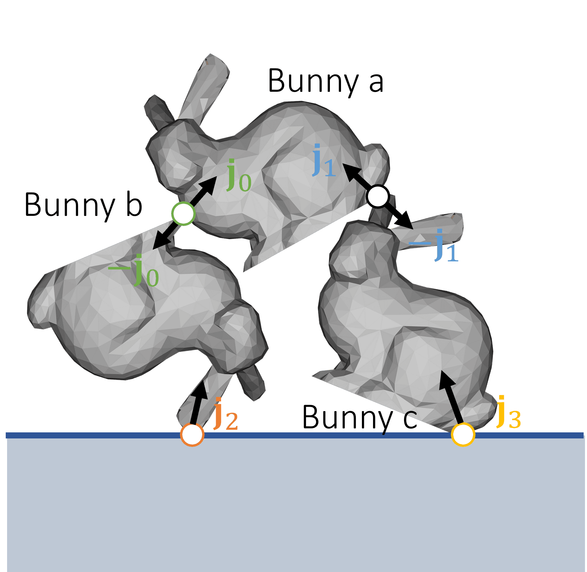

基于物理的动画：刚体动力学
本文是博主在实习公司制作的课程讲义，内容是基于物理的动画：刚体动力学。
原课程对应的幻灯片可以点击这里下载。
动画与物理仿真
概述
动画流水线 - 基于数据的动画
动画流水线 - 实时物理仿真
每帧的动画计算
动画是每帧对场景物体状态，包括视觉状态和非视觉的状态的更新
常见的视觉状态包括
- 位置
- 朝向（旋转）
- 外观
常见的非视觉的物理状态包括
- 外力
- 速度
- 密度
- ...
离线动画应用仅需存储视觉状态，物理仿真算法则按需存储其他物理状态
物理仿真流水线
设 \(t^{(k)}\) 为第 \(k\) 帧的时刻，\(\mathbf s^{(k)}\) 为仿真对象在第 \(k\) 帧时的状态。
仿真器在每一帧执行物理演算，并将结果提交给渲染器。
刚体动力学
预备知识
刚体的性质
- 刚体是不会产生形状、大小改变的理想物体。只有整体的平动和转动。
- 一般地，物理引擎存储的刚体仿真状态\(\mathbf s = \{\mathbf v, \mathbf x, \mathbf \omega, \mathbf q\}\)是一个四元组，其中 \(\mathbf v\) 为刚体的线速度，\(\mathbf x\)为位移，\(\mathbf \omega\)为角速度，\(\mathbf q\)为表示朝向的四元数 。
- 记\(n\)为刚体的顶点数。如果刚体的各顶点质量不一，记顶点\(i\)的质量为\(m_i\)，则\(M = (m_1, \dots, m_n)^T\)，记\(M^{-1} = (1 / m_1, \dots, 1 / m_n) \in \mathbb R^{1 \times n}\)。此时我们需要让\(\mathbf f = (\mathbf f_1, \dots, \mathbf f_n)^T\)分别储存各顶点的受力情况。
刚体的运动
刚体整体不缩放，只发生平动\(\mathbf x\)（translation）和转动\(\mathbf R\)（rotation）变换。
平动动力学
平动动力学
根据牛顿运动定律：
\[ \begin{cases} \mathbf v(t^{(1)}) = \mathbf v(t^{(0)}) + M^{-1} \int_{t^{(0)}}^{t^{(1)}} \mathbf f(\mathbf x, \mathbf v, t) \, \mathrm d t \\ \mathbf x(t^{(1)}) = \mathbf x(t^{(0)}) + \int_{t^{(0)}}^{t^{(1)}} \mathbf v(t) \, \mathrm d t \end{cases} \]
进行离散半隐式（semi-implicit）积分得到
\[ \begin{cases} \mathbf v^{(1)} = \mathbf v^{(0)} + \Delta t M^{-1} \mathbf f^{(0)}, \\ \mathbf x^{(1)} = \mathbf x^{(0)} + \Delta t \mathbf v^{(1)} \end{cases} \]
其中\(\mathbf v\)用上一帧的\(\mathbf f\)数据更新，是显式积分，\(\mathbf x\)用当前帧的\(\mathbf v\)数据更新，是隐式积分。可以证明，如此更新的\(\mathbf x\)相对完全显式法和完全隐式法是二阶精确的。
刚体仿真-仅平动
仿真流程：
- 输入状态\(\mathbf s^{(0)} = \{\mathbf v^{(0)}, \mathbf x^{(0)}\}\)
- \[ \begin{cases} \mathbf f_{i}^{(0)} = \text{Force}(\mathbf x_i^{(0)}, \mathbf v_i^{(0)}, \dots), \\ \mathbf f^{(0)} = (\mathbf f_1^{(0)}, \dots, \mathbf f_n^{(0)})^T, \\ \mathbf v^{(1)} = \mathbf v^{(0)} + \Delta t M^{-1} \mathbf f^{(0)}, \\ \mathbf x^{(1)} = \mathbf x^{(0)} + \Delta t \mathbf v^{(1)} \end{cases} \]
- 输出状态\(\mathbf s^{(1)} = \{\mathbf v^{(1)}, \mathbf x^{(1)}\}\)
注意：
- 各顶点质量\(M = (m_1, \dots, m_n)^T\)为常向量，表记\(M^{-1} = (1/m_1, \dots, 1/m_n) \in \mathbb R^{1 \times n}\)
- 时间间隔\(\Delta t\)可自定义，不一定是常量，也不一定与实际物理帧计算的时间间隔相同
转动动力学
旋转的表达 - 旋转矩阵与欧拉角
在讨论三维旋转时，我们只讨论绕某个过原点的旋转轴旋转。若旋转轴不过原点，需要先进行平移变换。
旋转矩阵：
- 三维空间中的旋转可用一个自由度为3的\(3 \times 3\)矩阵\(\mathbf R\)表示
- 对空间向量\(\mathbf v \in \mathbb R^{3}\)，矩阵-向量乘积\(\mathbf R \mathbf v\)可表示对该向量施加旋转变换
- 缺点：不够直观；自由度低，浪费空间；难以计算旋转相关的速度
欧拉角：
- 三维空间中的旋转亦可用直观的三元组------欧拉角（euler angle）表示
- 给定空间中三个固定正交轴（局部的或全局的），欧拉角是按固定顺序分别绕这些轴的旋转角度的记录。不同的欧拉角三元组，最终可能产生相同的旋转结果
- 缺点：可能丢失自由度（万向节死锁）；难以计算旋转相关的速度
旋转的表达 - 四元数
四元数\(\mathbf q = a + b \textrm i + c \textrm j + d \textrm k \in \mathbb H \leftrightarrow \mathbb R^4\)是对复数域\(\mathbb C \leftrightarrow \mathbb R^2\)的扩展，遵从运算法则
\[ \textrm i^2 = \textrm j^2 = \textrm k^2 = \textrm i \textrm j \textrm k = -1, \]
我们可以表记四元数\(\mathbf q = [s, \mathbf v]\)，其中\(s\)为\(\mathbf q\)的标量部分，\(\mathbf v\)为向量部分。可以推导四元数的标量积、加法和乘法运算：
\[ \begin{cases} a \mathbf q = [as, a \mathbf v], \\ \mathbf q_1 + \mathbf q_2 = [s_1 + s_2, \mathbf v_1 + \mathbf v_2], \\ \mathbf q_1 \times \mathbf q_2 = \mathbf q_1 \mathbf q_2 = [s_1s_2 - \mathbf v_1 \cdot \mathbf v_2, s_1 \mathbf v_2 + s_2 \mathbf v_1 + \mathbf v_1 \times \mathbf v_2]. \end{cases} \]
特别地，我们可以让三维向量\(\mathbf v\)也参与上述计算，只需视其为四元数\([0, \mathbf v]\)即可。
旋转的表达 - 四元数运算
正如一个归一化的复数可以表示二维旋转一样，一个归一化的四元数也可以表示一个三维旋转，它满足
\[ ||\mathbf q|| = \sqrt{s^2 + \mathbf v \cdot \mathbf v} = 1. \]
具体地，我们让向量\(\mathbf v\)绕某个过原点的空间轴\(\mathbf u\)旋转\(\theta\)角度，旋转方向使用右手螺旋判断。记
\[ \begin{cases} \mathbf q = \left[\cos \frac{\theta}{2}, \mathbf u \right], \\ ||\mathbf q|| = 1, \end{cases} \]
那么，可以证明，\(\mathbf q \mathbf v \mathbf q^{*}\)就是空间向量\(\mathbf v\)如上旋转后的结果的四元数表示，即\(\mathbf q \mathbf v \mathbf q^{*}\)的标量部分总是为\(0\)；其中\(\mathbf q^{*} = \left [\cos \frac{\theta}{2}, -\mathbf u \right]\)为\(\mathbf q\)的共轭四元数。
归一化的四元数可以与三维旋转形成一一对应。四元数也可以方便地转换为矩阵和欧拉角，因此成为了物理引擎内部旋转运算的常用数据类型。
转动动力学
记\(\mathbf q\)为表示刚体旋转的四元数，\(\mathbf R\)表示该旋转的变换矩阵，\(\mathbf \omega \in \mathbb R^3\)为旋转的角速度，规定：
- \(\mathbf \omega\)的方向为旋转轴（与旋转方向形成右手螺旋关系），
- \(\mathbf \omega\)的大小为旋转的角速率。
力矩
转动动力学中的力矩（torque）是平动动力学中的力（force）的等效，定义式为
\[ \mathbf \tau_i = (\mathbf R \mathbf r_i) \times \mathbf f_i. \]
转动惯量
转动动力学中的转动惯量（inertia）是平动动力学中的质量（mass）的等效，是一个\(3 \times 3\)矩阵。在初始状态下，转动惯量为一常量，定义式为
\[ \mathbf I_{\text{ref}} = \sum m_i (\mathbf r_i^T \mathbf r_i \mathbf 1 - \mathbf r_i \mathbf r_i^T). \]
在刚体经过旋转变换\(\mathbf R\)后，可以证明，此时转动惯量为
\[ \mathbf I = \mathbf R \mathbf I_{\text{ref}} \mathbf R^T. \]

请注意：一个三维空间中的物体存在无数个可能的转动轴，每个转动轴都对应着一个描述其转动惯性大小的标量\(I\)。但这些量并非完全相互独立，它们可以被整理成一个\(3 \times 3\)的矩阵\(\mathbf I_{\text{ref}}\)。
刚体仿真-仅转动
输入状态\(\mathbf s^{(0)} = \{\mathbf q^{(0)}, \mathbf \omega^{(0)}\}\)
更新中间物理状态
\[ \begin{cases} \mathbf R^{(0)} = \text{Matrix.Rotate}(\mathbf q^{(0)}), \\ \mathbf \tau_i^{(0)} = (\mathbf R^{(0)} \mathbf r_i) \times \mathbf f_i^{(0)}, \\ \mathbf \tau^{(0)} = \sum \mathbf \tau_i^{(0)}, \\ \mathbf I^{(0)} = \mathbf R^{(0)} \mathbf I_{\text{ref}} (\mathbf R^{(0)})^T, \end{cases} \]
更新刚体仿真状态
\[ \begin{cases} \mathbf \omega^{(1)} = \mathbf \omega^{(0)} + \Delta t (\mathbf I^{(0)})^{-1} \mathbf \tau^{(0)}, \\ \mathbf q^{(1)} = \mathbf q^{(0)} + \left[ 0, \frac{\Delta t}{2} \mathbf \omega^{(1)} \right] \times \mathbf q^{(0)} \end{cases} \]
输出状态\(\mathbf s^{(1)} = \{\mathbf q^{(1)}, \mathbf \omega^{(1)}\}\)
刚体动画
一般刚体仿真
刚体仿真流水线
输入状态\(\mathbf s^{(0)} = \{\mathbf v^{(0)}, \mathbf x^{(0)}, \mathbf \omega^{(0)}, \mathbf q^{(0)}\}\)
更新中间物理状态
\[ \begin{cases} \mathbf f_{i}^{(0)} = \text{Force}(\mathbf x_i^{(0)}, \mathbf v_i^{(0)}, \dots), \\ \mathbf f^{(0)} = (\mathbf f_1^{(0)}, \dots, \mathbf f_n^{(0)})^T, \\ \mathbf R^{(0)} = \text{Matrix.Rotate}(\mathbf q^{(0)}), \\ \mathbf \tau_i^{(0)} = (\mathbf R^{(0)} \mathbf r_i) \times \mathbf f_i^{(0)}, \\ \mathbf \tau^{(0)} = \sum \mathbf \tau_i^{(0)}, \\ \mathbf I^{(0)} = \mathbf R^{(0)} \mathbf I_{\text{ref}} (\mathbf R^{(0)})^T, \end{cases} \]
更新刚体仿真状态
\[ \begin{cases} \mathbf v^{(1)} = \mathbf v^{(0)} + \Delta t M^{-1} \mathbf f^{(0)}, \\ \mathbf x^{(1)} = \mathbf x^{(0)} + \Delta t \mathbf v^{(1)} \\ \mathbf \omega^{(1)} = \mathbf \omega^{(0)} + \Delta t (\mathbf I^{(0)})^{-1} \mathbf \tau^{(0)}, \\ \mathbf q^{(1)} = \mathbf q^{(0)} + \left[ 0, \frac{\Delta t}{2} \mathbf \omega^{(1)} \right] \times \mathbf q^{(0)} \end{cases} \]
输出状态\(\mathbf s^{(1)} = \{\mathbf v^{(1)}, \mathbf x^{(1)}, \mathbf \omega^{(1)}, \mathbf q^{(1)}\}\)
Shape Matching 刚体仿真
预备知识：奇异值分解与极分解
奇异值分解：任何变换均可被依次分解成三个部分：（可能带翻转的）旋转、缩放和（可能带翻转的）旋转。即
\[ \mathbf A = \mathbf U \mathbf D \mathbf V^T, \]
其中\(\mathbf A\)为任意方阵，\(\mathbf U\)和\(\mathbf V^T\)为正交矩阵，\(\mathbf D\)为对角矩阵
极分解：任何变换均可被依次分解成两个部分：（可能带翻转的）旋转和其他变形。即
\[ \mathbf A = \mathbf U \mathbf D \mathbf V^T = (\mathbf U \mathbf V^T) ( \mathbf V \mathbf D \mathbf V^T) = \mathbf R \mathbf S, \]
其中\(\mathbf R\)为正交矩阵，\(\mathbf S\)为半正定对称矩阵
Shape Matching
- 基本思想：先对每个顶点做自由模拟，然后再把这些顶点用某种方法变回刚体
- 变回刚体：让各顶点的位置满足刚体的位置约束，并且最小化各顶点在该过程中的移动距离。旋转变换通过极分解（polar decomposition）得到
- Shape Matching 思想与可变形体（弹性体）的仿真方案一脉相承，因此适合在弹性体上实现刚体，如衣服中的纽扣等挂件
- 由于欠缺物理正确性，Shape Matching 不适合处理带摩擦的碰撞情形
Shape Matching - 公式推导
记仿真得到的刚体的预期质心为\(\mathbf c\)，顶点\(i\)的位置为\(\mathbf r_i\)，依质心性质有\(\sum_i \mathbf r_i = \mathbf 0\)
设\(\mathbf y_i\)为自由仿真后的顶点位置，\(\mathbf x_i\)为满足刚体约束的顶点位置，则有\(\mathbf x_i = \mathbf c + \mathbf R \mathbf r_i\)，其中\(\mathbf R\)为某旋转矩阵
优化目标为
\[ \{ \mathbf c, \mathbf R \} = \text{argmin} \sum_{i} ||\mathbf c + \mathbf R \mathbf r_i - \mathbf y_i||^2 \]
Shape Matching - 公式推导
\[ \{ \mathbf c, \mathbf R \} = \text{argmin} \sum_{i} ||\mathbf c + \mathbf R \mathbf r_i - \mathbf y_i||^2 \]
考虑\(\mathbf A\)为任意矩阵，其中的旋转分量为\(\mathbf R\)，那么我们可以优化
\[ \{ \mathbf c, \mathbf A \} = \text{argmin} \sum_{i} ||\mathbf c + \mathbf A \mathbf r_i - \mathbf y_i||^2 \]
求导求极值
\[ \frac{\partial E}{\partial \mathbf c} = 0 \leftrightarrow \sum_{i} \mathbf c + \mathbf A \mathbf r_i - \mathbf y_i = 0 \]
得到
\[ \mathbf c = \frac{1}{n} \sum_{i} \mathbf y_i \]
即变回刚体前后的刚体质心位置不变。
Shape Matching - 公式推导
\[ \{ \mathbf c, \mathbf R \} = \text{argmin} \sum_{i} ||\mathbf c + \mathbf R \mathbf r_i - \mathbf y_i||^2 \]
另一方面
\[ \frac{\partial E}{\partial \mathbf A} = 0 \leftrightarrow \sum_{i} (\mathbf c + \mathbf A \mathbf r_i - \mathbf y_i) \mathbf r_i^T = 0 \]
得到
\[ \mathbf A = \left(\sum_i (\mathbf y_i - \mathbf c) \mathbf r_i^T \right) \left( \sum_i \mathbf r_i \mathbf r_i^T \right )^{-1} \]
最后，我们将\(\mathbf A\)做极分解
\[ \mathbf A = \mathbf R \mathbf S \]
使用其中的旋转部分\(\mathbf R\)即可。
Shape Matching 流水线
在 Shape Matching 刚体仿真流程中，不再以统一的\(\mathbb R^3\)向量更新刚体的位置、速度等仿真状态，而是单独仿真每个顶点；也不再考虑转动动力学。即此时\(\mathbf x = (\mathbf x_1, \dots, \mathbf x_n)^T\)，\(\mathbf v = (\mathbf v_1 \dots, \mathbf v_n)^T\)。
输入状态 \(\mathbf s^{(0)} = \{ \mathbf x^{(0)}, \mathbf v^{(0)} \}\)
对每个顶点单独仿真
\[ \begin{cases} \mathbf f_i = \text{Force}(\mathbf x_i^{(0)}, \mathbf v_i^{(0)}, \dots), \\ \mathbf v_i = \mathbf v_i^{(0)} + \Delta t m_i^{-1} \mathbf f_i, \\ \mathbf y_i = \mathbf x_i^{(0)} + \Delta t \mathbf v_i, \end{cases} \]
计算刚体位置约束
\[ \begin{cases} \mathbf c = \frac{1}{n} \sum_{i} \mathbf y_i, \\ \mathbf A = \left(\sum_i (\mathbf y_i - \mathbf c) \mathbf r_i^T \right) \left( \sum_i \mathbf r_i \mathbf r_i^T \right )^{-1}, \\ \mathbf R = \text{Polar}(\mathbf A), \end{cases} \]
更新各顶点仿真状态
\[ \begin{cases} \mathbf x_i^{(1)} = \mathbf c + \mathbf R \mathbf r_i, \\ \mathbf v_i^{(1)} = (\mathbf x_i^{(1)} - \mathbf x_i^{(0)}) / \Delta t, \end{cases} \]
输出状态 \(\mathbf s^{(1)} = \{ \mathbf x^{(1)}, \mathbf v^{(1)} \}\)
质点碰撞处理
预备知识
有向距离场
有向距离场（signed distance field, SDF）\(\phi(\mathbf x): \mathbb R^3 \to \mathbb R\)针对空间中的位置输出其到某个物体表面的最短距离。若该位置在物体内部，则输出距离为负，否则距离为正。
\(\phi(\mathbf x)\)的梯度\(\nabla \phi(\mathbf x)\)的方向给出了最快朝外远离物体表面的方向，可以类比法线方向理解。
罚函数法
朴素线性罚函数
质点碰撞检测的一般方法：检测其位置\(\mathbf x\)是否满足\(\phi(\mathbf x) \geq 0\)，若否，则意味着该质点位于物体内部，需进行碰撞处理
质点碰撞处理的一般方法：将其沿\(\nabla \phi(\mathbf x)\)的方向，移动到物体外
罚函数法（penalty method）是一类简单的碰撞处理方法，但在宏观物理上不一定正确。它的一般思路是在质点位于物体内部，或接近物体时，给其一个推力，使其远离物体。推力的方向\(\mathbf N\)一般是归一化的\(\nabla \phi(\mathbf x)\)
朴素的罚函数法使用一个正比于\(\phi(\mathbf x)\)的惩罚推力
\[ \mathbf f = -k \phi(\mathbf x) \mathbf N \]
该方法只有顶点位于碰撞体内部时才能将其推开，存在穿透瑕疵
有缓冲区的线性罚函数
加入一个宽度为\(\varepsilon\)的缓冲区，可一定程度上缓解穿透问题。此时若检测到\(\phi(\mathbf x) < \varepsilon\)，就要启动碰撞处理，施加惩罚推力
\[ \mathbf f = -k (\phi(\mathbf x) - \varepsilon) \mathbf N \]
此方法可以让质点在穿透之前就有远离物体的倾向，且计算简单。但若质点速率很高，直接穿进了碰撞体，将导致推力过大，产生视觉不正确的"飞天"现象。
使用log-barrier的罚函数
同样地，考虑在一定距离上就施加惩罚推力，可以设计使用log-barrier的罚函数
\[ \mathbf f = \rho \frac{1}{\phi(\mathbf x)} \mathbf N \]
问题仍然存在：穿透后，将产生错误的推力方向
总结：
- 如今的物理引擎一般都实装一套简单的罚函数法，罚函数一般为有缓冲区的线性罚函数或log-barrier罚函数。它们实现简单，但都可能存在穿透瑕疵和推力可能过大的问题
- 罚函数法不适合处理摩擦碰撞的情况
冲量法
冲量法
冲量法（impulse method）是一类假设质点的碰撞将导致位置和速度的突变的碰撞处理方法，它基于库仑摩擦定律，在宏观物理上表现得更正确。它的一般思路是在质点位于物体内部时，将质点的位置直接移动到最近的物体表面，并改变其速度方向使其不要再接近物体
对碰撞位置\(\mathbf x\)，新的位置\(\mathbf x^{\text{new}}\)的更新方法是
\[ \mathbf x^{\text{new}} = \mathbf x - \nabla \phi(\mathbf x) \phi(\mathbf x) \]
冲量法 - 速度更新
仅仅更新位置是不够的，为了避免接下来仍然发生穿透，我们还需要更新质点的速度
对碰撞时的速度\(\mathbf v\)正交分解得到
\[ \begin{cases} \mathbf v_N = (\mathbf v \cdot \mathbf N) \mathbf N, \\ \mathbf v_T = \mathbf v - \mathbf v_N \end{cases} \]
考虑库仑摩擦，分别修改法向速度和切向速度
\[ \begin{cases} \mathbf v_N^{\text{new}} = - \mu_N \mathbf v_N, \\ \mathbf v_T^{\text{new}} = a \mathbf v_T \end{cases} \]
最后合成得到
\[ \mathbf v^{\text{new}} = \mathbf v_N^{\text{new}} + \mathbf v_T^{\text{new}} \]
其中 \(\mu_N, \mu_T\) 是摩擦因数，参数 \(a\) 应当满足质点摩擦的库仑定律：
\[ a = \max \left (1 - \mu_T(1 + \mu_N)\frac{||\mathbf v_N||}{||\mathbf v_T||}, 0 \right ) \]
前项是动摩擦的结果，后项是静摩擦的结果。
刚体碰撞检测与处理
刚体碰撞检测
刚体碰撞检测与惩罚法的碰撞处理
- 朴素的刚体碰撞检测方法：对刚体的所有顶点\(i\)，逐一检测\(\phi(\mathbf x_i)\)是否为负值
- 聪明一点的碰撞检测方法：对碰撞不频繁的刚体，预先建立BVH，进行\(O(\log n)\)级别的检测
- 惩罚法的碰撞处理：对产生碰撞的顶点\(i\)，累加相应的惩罚力\(\mathbf f_i\)
冲量法的碰撞处理
冲量法的碰撞处理
- 使用冲量法进行刚体碰撞处理时，我们需要修改碰撞顶点的状态包括位置\(\mathbf x_i\)、速度\(\mathbf v_i\)和角速度\(\mathbf \omega_i\)。但刚体为一整体，单独修改顶点的状态是不可行的
- 为此，我们需要从局部状态的修改，推导出整体状态的修改，思路类似逆向运动学（IK）
冲量法的碰撞处理-从局部到整体
简单起见，我们先只讨论碰撞点为单个顶点的情况
初始时，\(\mathbf v_i = \mathbf v + \mathbf \omega \times \mathbf R \mathbf r_i\)
顶点\(i\)被施加冲量\(\mathbf j_i = \mathbf f_i \Delta t\)后，有
\[ \begin{cases} \mathbf v^{\text{new}} = \mathbf v + M^{-1} \mathbf j_i, \\ \mathbf \omega^{\text{new}} = \mathbf \omega + \mathbf I^{-1} (\mathbf R \mathbf r_i \times \mathbf j_i) \end{cases} \]
此时，\(\mathbf v_i^{\text{new}}\)与整体\(\mathbf v^{\text{new}}, \mathbf \omega^{\text{new}}\)的关系为
\[ \mathbf v_i^{\text{new}} = \mathbf v^{\text{new}} + \mathbf \omega^{\text{new}} \times \mathbf R \mathbf r_i \]
冲量法的碰撞处理 - 推导
代入计算得到
\[ \begin{aligned} \mathbf v_i^{\text{new}} &= \mathbf v^{\text{new}} + \mathbf \omega^{\text{new}} \times \mathbf R \mathbf r_i \\ &= \mathbf v + M^{-1} \mathbf j_i + (\mathbf \omega + \mathbf I^{-1} (\mathbf R \mathbf r_i \times \mathbf j_i)) \times \mathbf R \mathbf r_i \\ &= \mathbf v_i + M^{-1} \mathbf j_i + (\mathbf I^{-1} ( \mathbf R \mathbf r_i \times \mathbf j_i )) \times \mathbf R \mathbf r_i \\ &= \mathbf v_i + M^{-1} \mathbf j_i - \mathbf F_i \mathbf j_i \end{aligned} \]
其中\(\mathbf F_i\)是一个与\(\mathbf R, \mathbf r_i, \mathbf I\)有关的线性算子。于是
\[ \mathbf j_i = \mathbf K_i^{-1} (\mathbf v_i^{\text{new}} - \mathbf v_i) \]
其中
\[ \mathbf K_i = M^{-1} \mathbf 1 - \mathbf F_i. \]
冲量法的碰撞处理 - 流水线
冲量法碰撞处理的一般步骤：
输入状态\(\mathbf s = \{ \mathbf c, \mathbf v, \mathbf \omega \}\)
使用SDF检测碰撞，记碰撞点集合为\(U\)。若\(U\)为空集，则无需碰撞处理
否则，计算每个碰撞点更新后的位置和速度
\[ \begin{cases} \mathbf v_i = \mathbf v + \mathbf \omega \times \mathbf R \mathbf r_i, \\ \mathbf v_{N, i} = (\mathbf v_i \cdot \mathbf N) \mathbf N, \\ \mathbf v_{T, i} = \mathbf v_i - \mathbf v_{N, i}, \\ a = \max \left (1 - \mu_T(1 + \mu_N)\frac{||\mathbf v_{N, i}||}{||\mathbf v_{T, i}||}, 0 \right ), \\ \mathbf v_{N, i}^{\text{new}} = - \mu_N \mathbf v_{N, i}, \\ \mathbf v_{T, i}^{\text{new}} = a \mathbf v_{T, i}, \\ \mathbf v^{\text{new}}_i = \mathbf v_{N, i}^{\text{new}} + \mathbf v_{T, i}^{\text{new}} \end{cases} \]
对每个碰撞点，计算使得其速度发生如上变化的冲量\(\mathbf j_i\)
\[ \begin{cases} \mathbf K_i = M^{-1} \mathbf 1 - \mathbf F_i, \\ \mathbf j_i = \mathbf K_i^{-1} (\mathbf v_i^{\text{new}} - \mathbf v_i), \end{cases} \]
若有多个碰撞点，求该冲量的平均值；取陷入物体最深的那个碰撞点，作为位移的参考
\[ \begin{cases} \mathbf j = \frac{\sum \mathbf j_i}{ |U| }, \\ \mathbf x = \min_U(\mathbf x_i) \end{cases} \]
最后，利用该冲量更新刚体整体的速度和角速度，并更新位置以移除碰撞点
\[ \begin{cases} \mathbf c^{\text{new}} = \mathbf c + \mathbf R (\mathbf x - \nabla \phi(\mathbf x) \phi(\mathbf x)) , \\ \mathbf v^{\text{new}} = \mathbf v + M^{-1} \mathbf j, \\ \mathbf \omega^{\text{new}} = \mathbf \omega + \mathbf I^{-1} (\mathbf R \mathbf r_i \times \mathbf j) \end{cases} \]
输出状态\(\mathbf s^{\text{new}} = \{ \mathbf c^{\text{new}}, \mathbf v^{\text{new}}, \mathbf \omega^{\text{new}} \}\)
并行碰撞处理
当多点同时接触时，并行碰撞处理问题，会变成维度更高的线性系统。实际处理时，常进行简单的串行处理。

Shape Matching 的碰撞处理
Shape Matching 的碰撞处理
- Shape Matching仿真流程中，只需对每个顶点单独进行碰撞处理即可。这一处理方式与可变形体相同
- 若使用冲量法进行碰撞处理，则为了保证无穿透，需要在刚体约束之前、约束之后均再执行一遍碰撞检测和处理